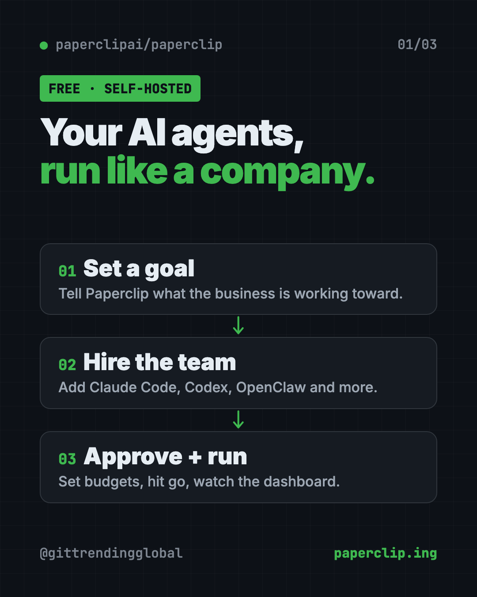
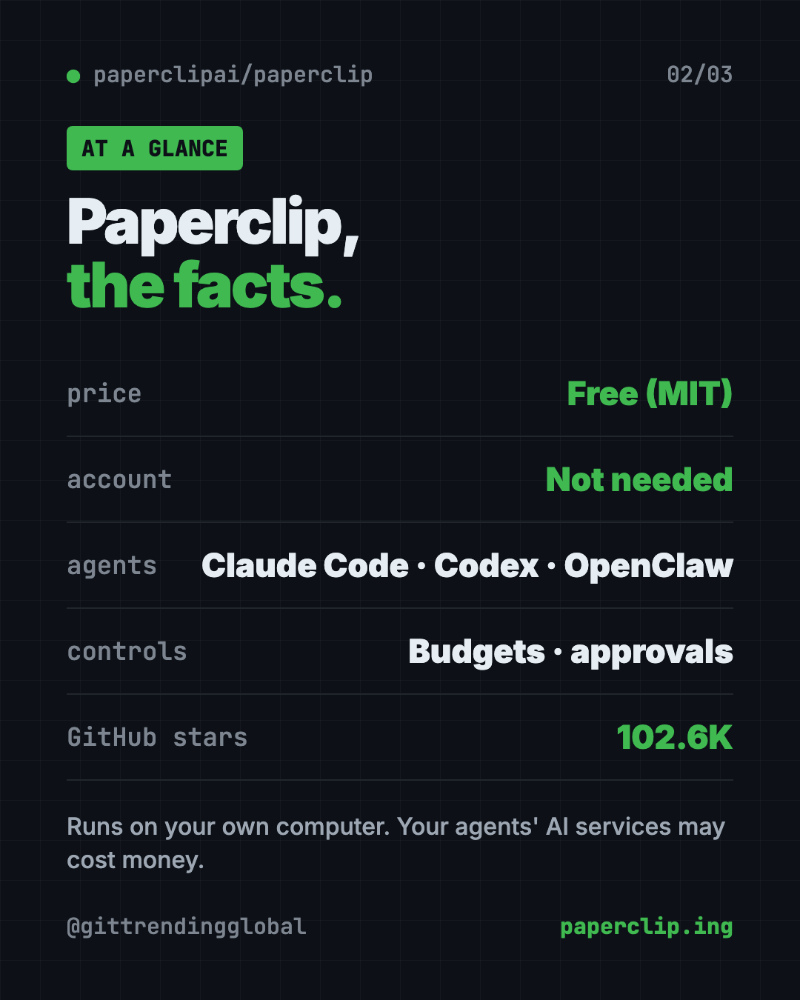
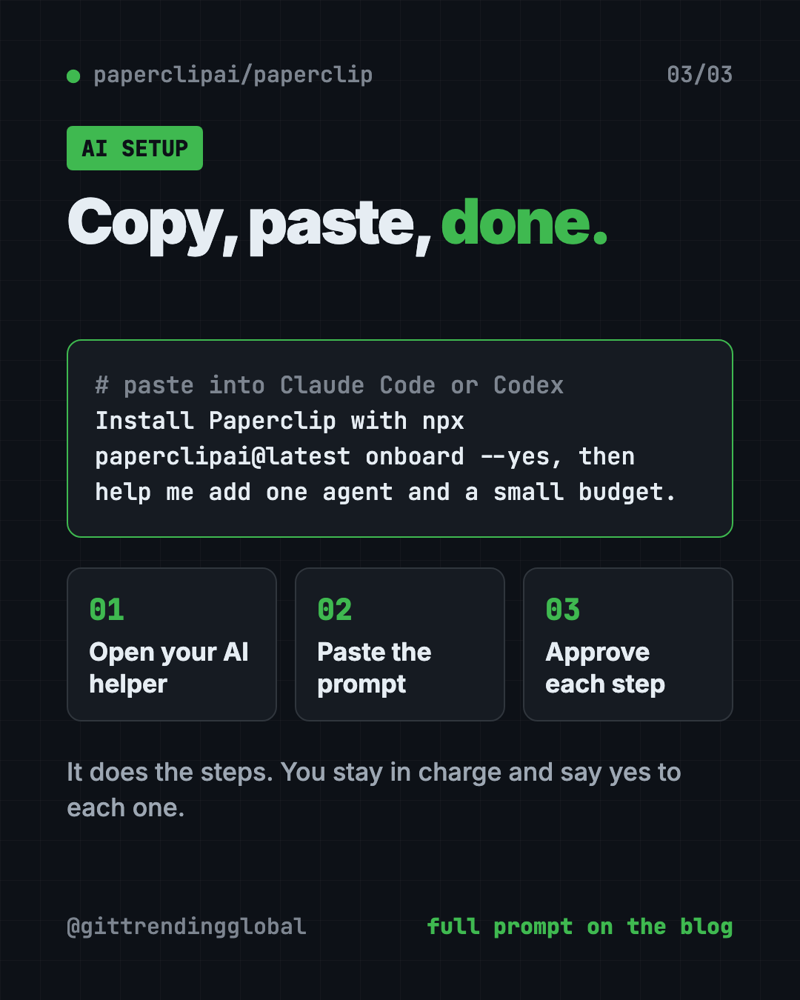

Paperclip: Free App to Manage AI Agents Like a Company
- Free AI tools
- Published 2026-10-15
- 7 min read
- Updated 2026-10-16
- Stars 102.6K
- License MIT
- By the It's Trending Global team
Paperclip is a free, self-hosted app to manage AI agents like a company, with goals, an org chart, budgets, approvals and one dashboard for all the work.
Paperclip is a free, open-source app to manage AI agents like a company. You set a goal, "hire" a team of AI agents, set budgets, and watch all the work from one dashboard in your browser.
One AI agent is easy to keep track of. Ten is chaos. Twenty terminal windows, nobody knows who's doing what, and a stuck agent can burn money before you notice. Paperclip's tagline sums up the fix: "If OpenClaw is an employee, Paperclip is the company."
Key takeaways
- Free and open source. MIT license, about 102.6K stars on GitHub.
- Self-hosted. It runs on your own computer. "No Paperclip account required," per the README.
- Bring any agent. Claude Code, Codex, Cursor, Gemini CLI, OpenClaw, Hermes and more.
- Budgets and approvals. Set spending limits, get alerts, and pause work automatically.
- Feels like a task manager. Under the hood: org charts, goals, schedules and review gates.
What is Paperclip?
Paperclip is a control center for teams of AI agents. An AI agent is an AI that can do tasks on its own, like writing code or doing research.
The README calls it "the app people use to manage AI agents for work." It "looks like a task manager." Behind that simple look are org charts, budgets, rules and goal tracking.
Paperclip doesn't make its own agents. It manages the ones you already use. The README puts it simply: "If it can receive a heartbeat, it's hired." A heartbeat is a wake-up signal that tells an agent there's work to do.

How does Paperclip work?
The README boils it down to three steps:
- Define the goal. For example, grow an app to a revenue target.
- Hire the team. A CEO, engineers, designers, marketers. "Any bot, any provider."
- Approve and run. Review the plan, set budgets, hit go, and watch from the dashboard.
Each agent gets a role, a title, a boss and a job description. Tasks link back to the bigger goal, so agents know why they're doing something, not just what.
Agents wake up when they get assigned work, a follow-up message or a scheduled job. They don't just run nonstop.
How to use Paperclip (real examples)
- Tame 20 open terminals. If you run many Claude Code sessions, turn each job into a task in Paperclip. Work survives a computer restart.
- Stop runaway costs. Set a budget per company, agent or project. Paperclip alerts you near the limit and can pause work.
- Automate repeat jobs. Set up a routine for weekly reports or social posts. Each run creates a task with an owner and a history.
- Check work before it ships. Add review and approval steps. You can pause, reassign or stop any agent.
- Run more than one business. One install can hold several separate organizations, each with its own agents and data.
💡 Tip: Start with one agent and one small goal. The README says you can "start with one agent and grow into a team."
What features does Paperclip have?
Here are the main ones from the README, in plain words:
- Org chart. Roles, reporting lines and permissions for agents and humans.
- Goal alignment. Tasks carry the goal behind them.
- Cost control. Budgets, spend tracking, alerts and automatic pauses.
- Governance. Approval stages, hire approvals, pause and stop controls.
- Task threads. Plans, files and history stay attached to the work.
- Scheduled routines. Recurring jobs on a timer, API or webhook.
- Skill Studio. Write, test and restore shared skills for your agents.
- Apps and connections. Link GitHub, Notion, Railway or your own tools, with "Allowed," "Ask first" or "Off" settings.
- Ready-made teams. Preview and install teams with roles and routines.
- Mobile ready. Check on your agents from your phone.
Is Paperclip free?
Yes. Paperclip is free under the MIT license, and you host it yourself.
The AI agents you plug in may cost money. Each one uses its own AI service. That's exactly why the budget tools matter. There's also a waitlist for a hosted Paperclip Cloud, but the README lists no price for it.
Paperclip at a glance
| Price | Free (the AI agents you connect may cost money) |
| Works offline | It runs on your computer, but your agents' AI services need internet |
| Platforms | Mac, Windows, Linux. You use it in your web browser |
| Needs | Node.js 24.11 or newer |
| License | MIT (open source) |
| Works with | Claude Code, Codex, Cursor, Gemini CLI, OpenClaw, Hermes, OpenCode and more |
| Best for | People juggling several AI agents who want order, budgets and oversight |

How to install Paperclip
You need Node.js 24.11 or newer. Node.js is a free program that runs many developer tools.
Open Terminal on a Mac, or a command window on Windows. Copy and paste this:
npx paperclipai@latest onboard --yes
That's the quick path. It sets up Paperclip on your own computer, and your settings and data stay local. The guided quickstart in the docs then helps you set up your first agent.
Want to try it first?
The README has a "test-drive" mode. It starts a throwaway setup that already has a CEO agent. If you have an Anthropic API key (a password-like code for your AI account), copy and paste this, with your key after the =:
ANTHROPIC_API_KEY=... npx paperclipai test-drive
⚠️ Heads up: The quick install starts in "trusted local" mode, meant for your own computer. To reach it from other devices, the README says to use authenticated mode with a private network like Tailscale. Don't open it to the public internet.
Let Claude or Codex set it up for you
Claude Code and OpenAI Codex are AI helpers that can run setup steps on your computer. The README even says: "Just ask your agent to install Paperclip."
Copy and paste this:
Please install Paperclip from github.com/paperclipai/paperclip.
1. Check that Node.js 24.11 or newer is installed. If not, help me get it.
2. Run "npx paperclipai@latest onboard --yes" and explain what it does first.
3. Open the Paperclip dashboard in my browser.
4. Help me create one company, one goal and one agent.
5. Set a small budget so nothing runs up a big bill.
Then try asking:
Set up a Paperclip routine that writes me a weekly summary every Monday.
Add an approval step in Paperclip so I review work before it's marked done.
Connect my Claude Code to Paperclip as an agent and give it one test task.

Who should use Paperclip?
- Solo founders running several AI agents on one business.
- Small teams who want one place to see what every agent is doing.
- Power users of Claude Code or Codex with too many windows open.
- Anyone worried about AI bills who wants hard budget limits.
If you only use one chatbot now and then, you don't need it yet.
Our take
Paperclip is a serious tool for people who already run several agents. If you want to manage AI agents with budgets, goals and approvals instead of a pile of terminal windows, it's worth a look.
What we like:
- Free, self-hosted, no account needed.
- Works with the agents you already use.
- Budgets and automatic pauses protect your wallet.
- Approvals keep a human in charge.
- Active project. The README says over 2,700 pull requests have been merged.
What to watch for:
- Lots of features. It can feel like a lot at first.
- Setup needs Node.js and the terminal.
- Your agents' AI services still cost money.
- Some parts, like Agent Chat, are still experimental.
Paperclip pairs well with OpenClaw, a free AI assistant for your chat apps, and Hermes Agent, a free self-improving AI agent. It also made our best GitHub repos of March 2026.
FAQ
Is Paperclip free?
Yes. Paperclip is free and open source under the MIT license. The AI agents you connect may charge for their own use.
Do I need an account to use Paperclip?
No. The README says it's self-hosted with "no Paperclip account required."
Which AI agents work with Paperclip?
The README lists OpenClaw, Claude Code, Codex, Cursor, Gemini CLI, OpenCode, Pi, Hermes, Grok Build and Kimi Code, plus custom ones.
How is Paperclip different from OpenClaw or Claude Code?
Paperclip uses those agents. It organizes them into a company with org charts, budgets, goals and approvals.
Can Paperclip stop agents from overspending?
Yes. You set budgets per company, agent or project. It tracks spend, sends alerts and can pause work at your limit.
Do Paperclip agents run all the time?
No. They wake up for assigned work, follow-up messages or scheduled routines.
Get Paperclip: github.com/paperclipai/paperclip
Follow ITG Now on Instagram for one free, useful tool every day.
Keep reading

DBX: Free Database Client for 100+ Databases, With AI (2026)
DBX is a free database client that opens 100+ kinds of databases in a 25 MB app. Its AI helper turns plain English into database queries for you.

PureMac: Free CleanMyMac Alternative, No Subscription
PureMac is a free CleanMyMac alternative. It clears junk, fully uninstalls apps and finds duplicates, with no subscription, no tracking and no scare tactics.

Strata: Run Big Local AI on a Gaming PC, Free
Strata is a free installer that runs big, private local AI on a gaming PC. It sets up a large Qwen model, so your chats never leave your computer.